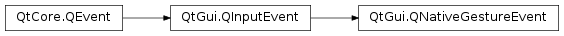

QNativeGestureEvent¶
Synopsis¶
Detailed Description¶
The
PySide2.QtGui.QNativeGestureEventclass contains parameters that describe a gesture event.Native gesture events are generated by the operating system, typically by interpreting touch events. Gesture events are high-level events such as zoom or rotate.
Event Type Description Touch equence Qt.ZoomNativeGestureMagnification delta in percent. macOS : Two-finger pinch. Qt.SmartZoomNativeGestureBoolean magnification state. macOS : Two-finger douple tap (trackpad) / One-finger douple tap (magic mouse). Qt.RotateNativeGestureRotation delta in degrees. macOS : Two-finger rotate. In addition, BeginNativeGesture and EndNativeGesture are sent before and after gesture event streams:
BeginNativeGesture ZoomNativeGesture ZoomNativeGesture ZoomNativeGesture EndNativeGesture
See also
Qt.NativeGestureTypePySide2.QtWidgets.QGestureEvent
-
class
PySide2.QtGui.QNativeGestureEvent(type, localPos, windowPos, screenPos, value, sequenceId, intArgument)¶ -
class
PySide2.QtGui.QNativeGestureEvent(type, dev, localPos, windowPos, screenPos, value, sequenceId, intArgument) Parameters: - sequenceId –
PySide2.QtCore.ulong - localPos –
PySide2.QtCore.QPointF - value –
PySide2.QtCore.qreal - type –
PySide2.QtCore.Qt.NativeGestureType - dev –
PySide2.QtGui.QTouchDevice - intArgument –
PySide2.QtCore.quint64 - screenPos –
PySide2.QtCore.QPointF - windowPos –
PySide2.QtCore.QPointF
Constructs a native gesture event of type
typeoriginating fromdevice.The points
localPos,windowPosandscreenPosspecify the gesture position relative to the receiving widget or item, window, and screen, respectively.realValueis the macOS event parameter,sequenceIdandintValueare the Windows event parameters.- sequenceId –
-
PySide2.QtGui.QNativeGestureEvent.device()¶ Return type: PySide2.QtGui.QTouchDeviceReturns the device.
-
PySide2.QtGui.QNativeGestureEvent.gestureType()¶ Return type: PySide2.QtCore.Qt.NativeGestureTypeReturns the gesture type.
-
PySide2.QtGui.QNativeGestureEvent.globalPos()¶ Return type: PySide2.QtCore.QPointReturns the position of the gesture as a
PySide2.QtCore.QPointFin screen coordinates
-
PySide2.QtGui.QNativeGestureEvent.localPos()¶ Return type: PySide2.QtCore.QPointFReturns the position of the gesture as a
PySide2.QtCore.QPointF, relative to the widget or item that received the event.
-
PySide2.QtGui.QNativeGestureEvent.pos()¶ Return type: PySide2.QtCore.QPointReturns the position of the mouse cursor, relative to the widget or item that received the event.
-
PySide2.QtGui.QNativeGestureEvent.screenPos()¶ Return type: PySide2.QtCore.QPointFReturns the position of the gesture as a
PySide2.QtCore.QPointFin screen coordinates.
-
PySide2.QtGui.QNativeGestureEvent.value()¶ Return type: PySide2.QtCore.qrealReturns the gesture value. The value should be interpreted based on the gesture type. For example, a Zoom gesture provides a scale factor while a Rotate gesture provides a rotation delta.
-
PySide2.QtGui.QNativeGestureEvent.windowPos()¶ Return type: PySide2.QtCore.QPointFReturns the position of the gesture as a
PySide2.QtCore.QPointF, relative to the window that received the event.
© 2018 The Qt Company Ltd. Documentation contributions included herein are the copyrights of their respective owners. The documentation provided herein is licensed under the terms of the GNU Free Documentation License version 1.3 as published by the Free Software Foundation. Qt and respective logos are trademarks of The Qt Company Ltd. in Finland and/or other countries worldwide. All other trademarks are property of their respective owners.